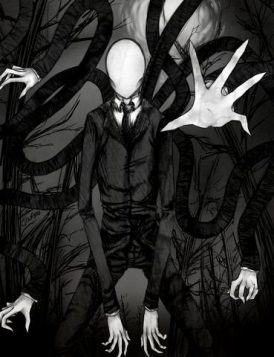
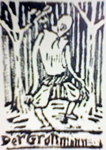
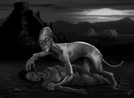
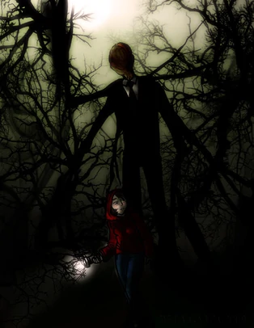
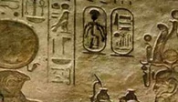
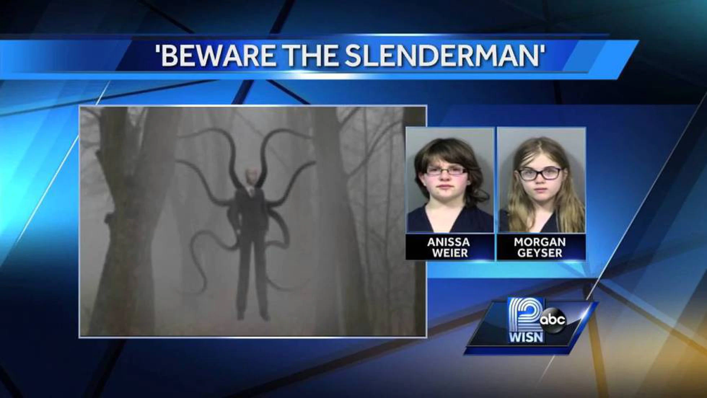

Slender Man (Hombre Delgado, en español) es un ser masculino, posee un cuerpo con brazos y piernas muy delgados y largos. También parece tener de 4 a 8 tentáculos largos y negros que sobresalen de su espalda. Sus brazos se pueden estirar o acortar a su voluntad.
Se le describe como un hombre delgado, vestido siempre con traje. Una vez que sus brazos están extendidos, sus víctimas entran en una especie de estado hipnótico, en que son absolutamente incapaces de pararse o de caminar.
Es capaz de usar sus tentáculos para transportarse, los que puede estirar indefinidamente. Absorbe, mata, o simplemente lleva a sus víctimas a un lugar o dimensión desconocida. Nunca se localizan cuerpos ni pruebas al respecto para deducir una conclusión definitiva. Se ignora cómo asesina a sus víctimas.
Su cara es pálida, prácticamente parece que se ha envuelto en una especie de gasa o un paño. No posee rasgos faciales. También puede ser visto usando una corbata o un pañuelo largo de color rojo o gris. Tiene manos igualmente blancas, como si llevara guantes de enfermero. Su traje es de color negro y lleva zapatos.

Origen
Según las fuentes más conocidas de Internet, fue concebido el 8 de junio del año 2009 de mano de Víctor Surge en los foros de SomethingAwful.com en un concurso de Photoshop, identificado como una criatura que acosa a los niños. A propósito de esto, en un foro inició un tema relacionado con Slenderman: un usuario publicó unos dibujos antiguos que el creador del personaje seguramente había manipulado digitalmente, como, por ejemplo, las imágenes trucadas de "La Danza Macabra", en las que se podía apreciar claramente figuras parecidas en muchos aspectos a Slenderman, estirando sus brazos y cuerpo en límites extraordinarios.
Slenderman en la antigüedad
The Grossman era un humanoide altísimo y aterrador que vivía en los bosques y se llevaba a los niños que se portaban mal. La leyenda es de origen alemán y, o bien es falsa, o bien no se puede encontrar información fiable sobre ella en la web, ni siquiera en alemán. Su relación con Slenderman implica unos grabados hechos en 1540 por Hans Freckenberg: en uno se escenifica a un caballero medieval luchando contra un esqueleto de extremidades anormalmente largas; en otro, a un esqueleto semejante llevándose a unos niños. Se cree que el esqueleto es una representación de The Grossman. Supuestamente, Hans desapareció (creen que se lo llevó The Grossman) sin razón aparente en 1543, y los grabados fueron hallados en el Halstberg Castle a la fecha de 1883.

The Grossman
El Noppera-bō es un tipo de fantasma de la mitología japonesa. Generalmente aparece con forma humana, sobre todo de bella mujer. Es inofensivo, pero asusta porque sus facciones se van borrando hasta que su rostro se cubre por un blanco intenso, como el de Slenderman. Esta entidad es plural, es decir, hablamos de una especie, mientras que Slenderman es una criatura individual, única en su clase.
Noppera-bō
El alû no tiene rostro, es mitad-humano y mitad-demonio, y su origen se remonta a las antiquísimas creencias acadias, sumerias y babilonias. Además, atormenta a los seres humanos mientras duermen, y puede paralizarlos si los mira, quitándoles el habla y hasta la conciencia. En la mitología sumeria es un tipo de espíritu o demonio, por lo que su carácter genérico es suficiente para que no tenga sentido compararlo con Slenderman. Entretanto, en la mitología acadia es uno de los siete demonios-utukkis hijos de Anu, siendo que, en este caso, la comparación con Slenderman carece de sentido porque es un ser puramente mitológico, mientras que Slenderman pertenece al ámbito de la leyenda.

Comportamiento
A pesar de que se rumorea que mata a los niños casi exclusivamente, es difícil decir si su único objetivo es la masacre. Muchas veces se notificaron avistamientos de él en los bosques, junto a zonas urbanas. También se ha reportado verlo junto a grandes grupos de niños, como muchas fotografías retratan. Se piensa comúnmente que reside en bosques y selvas y se alimenta de los niños. Él no parece preocupado por su exposición a la luz del día o ser capturado en fotos.
Con frecuencia se cree que disfruta acosando personas a tal punto que estas se vuelven demasiado paranoicas. Y así es, en efecto: él continúa apareciendo ante estas a fin de perpetrar el temor que sugiere especialmente sobre ellas. Se habla asimismo de que hay 8 páginas escondidas en el bosque donde Slenderman mora: si las recolectas todas, él desaparecerá para siempre.
Con frecuencia esta entidad parece flotar o desplazarse alrededor en lugar de caminar. Eso explicaría por qué es capaz de mantener su movilidad a pesar de su cuerpo mal proporcionado.

Algunas personas ya han cobrado avistamientos "reales", no obstante la información oficial en cuanto al origen puramente artístico de Slender Man. Afirman descubrirlo principalmente en la noche, mirando por las ventanas abiertas, o yendo delante de los conductores solitarios en las carreteras desiertas.
Slender Man ha inspirado muchas historias como las de Marble Hornets.
Referencias Históricas
Pinturas Rupestres Brasileñas
La primera referencia argumenta que la leyenda registra su narración simbólica en las pinturas rupestres halladas en la Serr da Capivara Parque Nacional del Nordeste de Brasil, que se cree que datan de fecha tan lejana como 9000 a.c.
Estas pinturas muestran a una personaje extrañamente alargado que lleva a un niño de la mano, pero no exhibe los apéndices extra.
Jeroglíficos Egipcios
La siguiente referencia posiblemente conocida del hombre delgado se remonta alrededor de 3100 a.c., desde el Bajo Egipto. Allí se suscitaron historias sobre el
"Ladrón de los Dioses" o el
"Ladrón de Kuk", durante el reinado del faraón Wazner. Los grabados muestran a una extraña figura con múltiples extremidades superiores. No existe en ningún otro jeroglífico.

Documental
Slenderman es un ser antropomórfico de entre dos y cuatro metros de largo. Sus extremidades son larguísimas y su rostro es una máscara pálida sin facciones, sin ojos, sin orejas, sin boca. En la espalda esconde seis tentáculos con los que ataca a sus víctimas. Es invisible a voluntad y, por eso, muy pocas veces ha podido ser fotografiado o grabado en vídeo. Se mueve en las sombras y acecha a niños y adolescentes sin que nadie se ponga de acuerdo en si es una presencia protectora o una amenaza.
Lo crean ustedes o no, hay muchos adolescentes que creen a pies juntillas en la existencia de este personaje que, en realidad, fue creado en 2009 por un usuario, Victor Knudsen bajo el Nick de ‘Victor Surge’, del foro Something Awful para participar en un hilo de imágenes retocadas con Photoshop. La bola fue creciendo hasta convertir al personaje en un meme y de ahí a material para creepypasta, un tipo de relato de terror de género colaborativo. Una vez convertido en personaje literario y en personaje de Fanfic, el salto al mito y a la creencia de la existencia real del personaje fue un paseo en calesa, sobre todo cuando la red está inundada de vídeos, fotos y testimonios de internautas que alimentan la idea de que Slenderman vive entre nosotros.
El mito, ya de por sí retorcido, tomó un giro tétrico el 31 de mayo de 2014.
Morgan Geyser y
Anissa Weier, dos niñas de 12 años residentes en Waukesha (Wisconsin), se conocen e intiman cuando comienza el curso. Crean una amistad muy especial, ya que Annisa no es muy popular y no tiene amigos y Morgan tampoco cuenta con muchas amistades excepto la de Payton Leutner a la que, en las últimas fechas, está dejando de lado. Anissa y Morgan tienen una imaginación desbordante y, ambas, comparten aficiones literarias comunes: son fans de los creepypastas y de la literatura de terror. Entre ellas estalla una amistad que retroalimenta sus fantasías.
Las amigas deciden asesinar a la otra niña aprovechando el barullo del cumpleaños de Morgan, ya que las tres van a dormir en la misma casa para hacer una fiesta de pijamas. Van a un parque que tiene una zona boscosa cercana y con la excusa de que van a jugar al escondite, la llevan a la zona más profunda y allí le asestaron 19 puñaladas con un cuchillo de cocina. Las autoras dejan en estado agonizante a la víctima y se escapan del lugar del crimen. Payton se arrastra hasta una carretera cercana donde es recogida por un ciclista a la que narra los hechos y es trasladada a un hospital donde le salvan la vida.
Mientras todo esto ocurre, Morgan y Anissa son detenidas por un policía al que le resulta sospechosa la presencia de dos niñas tan pequeñas caminando solas por el arcén de la Interestatal 94. Anissa le cuenta al policía que acaban de asesinar a Payton Leutner y que se dirigían a la Reserva Natural de Nicolet donde se encuentra la mansión de Slenderman para reunirse con él. Los antecedentes y los precedentes de este caso criminal tan extraño son narrados con todo lujo de detalles y mucha pericia por Irene Taylor Brodsky en su documental Beware the Slenderman que acaba de estrenar la cadena HBO en nuestro país.

Morgan y Anissa intentaron matar a Payton Leutner para honrar a Slenderman y convertirse en sus sirvientas, en una especie de agentes del mito que, según sus seguidores, se encargan de hacerle el trabajo sucio. Ambas confiesan los hechos a la policía sin guardarse nada, contando todo con inocencia infantil, esperando ser eximidas de responsabilidad, como si el asunto solo fuera una trastada que se les ha ido de las manos (¿Quién se comió la tarta que se enfriaba en el alféizar? ¿Quién rompió la ventana del vecino de un balonazo?). Esperando, o eso da la sensación, que la policía crea en la existencia de Slenderman y que se ponga en marcha para detener al verdadero culpable.
Lejos de ser un cuento moral, y el documental actual tiende a serlo, Beware of the Slenderman cuenta los hechos con una frialdad arrebatadora, usando los testimonios de los familiares de las niñas y transmitiendo a la perfección todos los sentimientos contradictorios que les produce el amor hacia las crías y el hecho de que hayan cometido un crimen tan horrible para honrar a un personaje ficticio. El documental se convierte en un juego de muñecas rusas en el que vamos descubriendo más y más detalles del caso mientras aprendemos la fuerza de los mitos e intentamos comprender todos los rasgos de personalidad de ambas crías. De paso, nos advierte de que el escalón generacional y las nuevas tecnologías no se llevan bien y que, por descontado, Internet ha roto la barrera entre la realidad y la ficción.
Morgan y Annisa decidieron creer en Slenderman, al igual que otros deciden creer que hay bases nazis en la Antártida, que Isabel II es en realidad un extraterrestre reptiliano o aquello de la fan de Ricky Martin, su perro y el bote de mermelada. La gente cree por inocencia, por inmadurez, por analfabetismo o por sentirse afianzada en sus ideas. A veces, desgraciadamente, mata por ello. Por razones tan absurdas como las que llevaron a dos crías de doce años a apuñalar a otra y así ganarse al favor de un ser imaginario que les esperaba en la profundidad del bosque.
El caso, conocido como El apuñalamiento de Slenderman, se convirtió en carnaza para los medios sensacionalistas lo que provocó un estúpido debate sobre los límites, el control de contenidos y el uso que se le daba a Internet. También generó una pequeña, pero intensa, ola de pánico en Estados Unidos donde se sucedieron casos, falsos o no, de asaltos violentos relacionados con el culto al personaje. Por ejemplo, Lily Marie Hartwel con 14 años de edad, del condado de Pasco (Florida), en la noche del 4 de septiembre de 2014 incendió el domicilio familiar cuando su madre y su hermano de 9 años dormían en su interior. Aunque se sabía que el hecho podía estar relacionado con una riña doméstica o con un accidente, la chica cometió algunos errores de bulto en su declaración como decir que no sabía qué había pasado y reconocer que era asidua de creepypasta.com y souleater.com, lo que fue suficiente para que los medios sensacionalistas se pasaran unos cuantos días hablando del asunto y relacionándolo directamente con Slenderman.